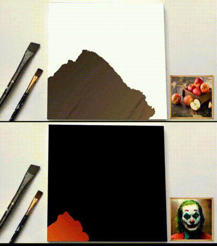

| Shuang Qiu | I
am a research assistant professor in the Department of
Mathematics at the Hong Kong University of Science and
Technology. I was a postdoc in the Department of
Mathematics at the Hong Kong University of Science and
Technology working with Prof. Tong Zhang and in the Booth
School of Business at the University of Chicago working
with Prof. Mladen Kolar and Prof. Zhaoran Wang. I received my
Ph.D. degree in Computer Science and Engineering from the
University of
Michigan, Ann Arbor in 2021, advised by Prof. Jieping Ye. Previously, I did
my internship at Tencent AI Lab, Seattle in 2018,
working with Dr.
Ji Liu. |
Research Interest
My recent research interest generally focuses on solving sequential decision-making problems, which lies at the intersection of reinforcement learning, game theory, optimization, and statistical learning. In addition, I am also interested in the application of machine learning to the various areas such as large language models, econometrics, computer vision, and data mining.
- Reinforcement Learning and Games
- Optimization
- Statistical Learning
- Applications in Large Language Models, Econometrics, Computer Vision, and Data Mining
Selected Recent Publication [Full List]
Rewards-in-Context: Multi-Objective Alignment of Foundation
Models with Dynamic Preference Adjustment
Preprint
[PDF] [Codes]
Pessimism Meets Risk: Risk-Sensitive Offline Reinforcement Learning
Preprint
Posterior Sampling for Competitive RL: Function Approximation and Partial Observation
Advances in Neural Information Processing Systems (NeurIPS), 2023
[PDF]
Optimistic Exploration with Learned Features Provably Solves Markov Decision Processes with Neural Dynamics
International Conference on Learning Representations (ICLR), 2023
[PDF]
Gradient-Variation Bound for Online Convex Optimization with Constraints
AAAI Conference on Artificial Intelligence (AAAI), 2023
[PDF]
Contrastive UCB: Provably Efficient Contrastive Self-Supervised Learning in Online Reinforcement Learning
Preprint
[PDF] [Codes]
Pessimism Meets Risk: Risk-Sensitive Offline Reinforcement Learning
Preprint
Posterior Sampling for Competitive RL: Function Approximation and Partial Observation
Advances in Neural Information Processing Systems (NeurIPS), 2023
[PDF]
Optimistic Exploration with Learned Features Provably Solves Markov Decision Processes with Neural Dynamics
International Conference on Learning Representations (ICLR), 2023
[PDF]
Gradient-Variation Bound for Online Convex Optimization with Constraints
AAAI Conference on Artificial Intelligence (AAAI), 2023
[PDF]
Contrastive UCB: Provably Efficient Contrastive Self-Supervised Learning in Online Reinforcement Learning
International Conference on Machine Learning (ICML), 2022
[PDF] [Codes]
In-Database Machine Learning with CorgiPile: Stochastic Gradient Descent without Full Data Shuffle
International Conference on Management of Data (SIGMOD), 2022
[PDF] [Extended Version]
On
Reward-Free RL with Kernel and Neural Function Approximations:
Single-Agent MDP and Markov Game
International Conference on Machine Learning (ICML), 2021
[PDF]
Provably Efficient Fictitious Play Policy Optimization for
Zero-Sum Markov Games with Structured Transitions
International Conference on Machine Learning (ICML), 2021
[PDF]
Stylized Neural Painting
IEEE/CVF Conference on Computer Vision and Pattern Recognition (CVPR), 2021
[PDF] [Codes] [Project]
|  | -
Featured Applications
|

Upper Confidence Primal-Dual Reinforcement Learning for CMDP with Adversarial Loss
Advances in Neural Information Processing Systems (NeurIPS), 2020
[PDF]
Robust One-Bit Recovery via ReLU Generative Networks:
Near-Optimal Statistical Rate and Global Landscape Analysis
International Conference on Machine Learning (ICML), 2020
[PDF]
Academic Service
Conference
- AAAI Conference on Artificial Intelligence (AAAI), 2023-2024. Senior PC Member
- International Conference on Learning Representations (ICLR), 2023-2024. Reviewer
- International Conference on Artificial Intelligence and Statistics (AISTATS), 2023. Reviewer
- Advances in Neural Information Processing Systems (NeurIPS), 2018-2023. Reviewer
- International Conference on Machine Learning (ICML), 2021-2023. Reviewer
- AAAI Conference on Artificial Intelligence (AAAI), 2021. Program Committee Member
- International Joint Conferences on Artificial Intelligence (IJCAI), 2021-2023. Program Committee Member
- SIGKDD Conference on Knowledge Discovery and Data Mining (KDD), 2020, 2023. Reviewer
- Journal of Machine Learning Research (JMLR). Reviewer
- IEEE Transactions on Information Theory (TIT). Reviewer
- IEEE Transactions on Knowledge and Data Engineering (TKDE). Reviewer
- IEEE Transactions on Neural Networks and Learning Systems (TNNLS). Reviewer
- Springer Machine Learning (ML). Reviewer
- IEEE Transactions on Signal Processing (TSP). Reviewer